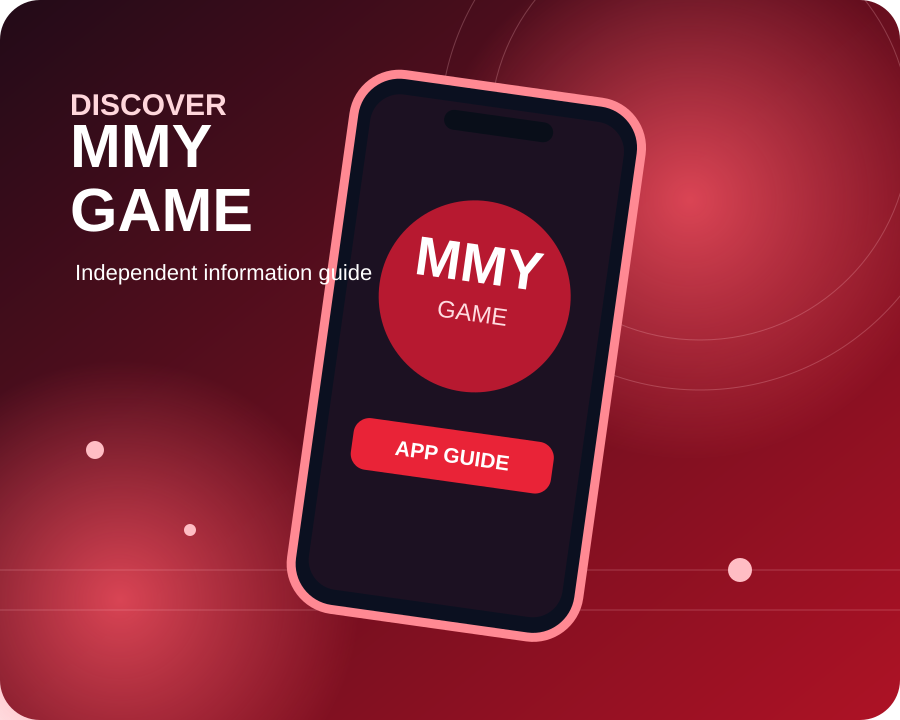

📘
Clear App Information
Understand what to verify before using the MMY App, including supported devices and publisher details.
Looking for MMY Game information? Explore this practical guide to the MMY App, APK installation precautions, account access, features to verify and responsible gaming.

MMY Game is the subject of this independent online gaming information guide. People searching for the MMY App may want to know how to find a legitimate download source, understand the account process or review basic safety considerations before using a service. This page organizes those topics into one accessible resource.
Because app publishers can change their websites, download packages, features and terms, we do not claim that any particular MMY APK size, version number, bonus amount or safety rating is current. The best way to confirm those details is to check a verified publisher channel. Our role is to explain what to look for and how to make informed choices.
Use the navigation to explore our About Us page, Privacy Policy, Disclaimer and MMY Game FAQs.
Understand what to verify before using the MMY App, including supported devices and publisher details.
Review sensible precautions for identifying an official MMY APK source and checking file permissions.
Find straightforward MMY Login and registration guidance without sharing credentials with third parties.
| Guide name | MMY Game |
|---|---|
| Website | mmyapk.com |
| Coverage | MMY App, APK, Download, Login, Registration |
| APK size | Not independently verified |
| Current version | Not independently verified |
| Welcome bonus | Not independently verified |
| App security | Not independently tested |
| APK hosting | No files hosted on this website |
When searching for MMY Download or MMY APK Download, the most important step is verifying that the file comes from the genuine publisher. Search results and social media messages can contain lookalike pages. Do not assume a large Download button proves that a file is authentic.
Gallery illustrations are original designs, not screenshots of a verified MMY app.
If the legitimate MMY App offers account registration, open its verified service and look for a Register or Sign Up option. Review eligibility requirements and terms before creating an account. Use a unique password and never give an OTP, recovery code or password to a third-party website.
Registration steps may vary by app version. If a screen looks different from a guide, rely on the publisher’s current documentation rather than outdated screenshots. Where gaming involves money or prizes, check your local rules and any age or identity requirements before proceeding.
To use MMY Login, visit the verified service and select its sign-in option. Enter your credentials only on a domain or application you trust. If you cannot log in, first check your internet connection and confirm that the address is genuine.
For a forgotten password, use the service’s official recovery process. Avoid unofficial “instant login” pages and people who ask for your verification codes. If your account appears compromised, change relevant passwords and contact verified support channels promptly.
Online gaming should be approached with clear limits. If an activity includes real-money participation, understand that outcomes can be uncertain and losses are possible. Never treat gaming as a reliable source of income, and do not borrow money to participate.
Set time and spending limits where relevant, take breaks, and stop if play causes stress or financial problems. Follow applicable age restrictions and local laws. Some activities may be prohibited in your region; verify legality independently before using a service.
For more about the limits of this independent guide, read our Disclaimer. Our Privacy Policy explains how this static website is designed to handle information.
MMY Game is the app or gaming service discussed in this independent information guide. Check the publisher’s verified materials for current features and availability.
Use a source you can independently verify as official. This website does not host an APK or provide an unverified download link.
Open the verified app or official service, choose Login, and follow its current sign-in instructions. Never share passwords or one-time codes.
Use the registration option on the verified service, review its terms and age requirements, and provide only information you are comfortable sharing.
We have not independently tested any MMY APK. Do not assume an app is safe without verifying the publisher, source, permissions and device security checks.
The current file size has not been independently verified for this guide. Consult the official publisher for accurate information.
We do not publish unverified bonus amounts or promotions. Refer to the verified service terms for current offers, if any.
Check your connection, confirm you are using the legitimate service, and follow its official account recovery or support process.
iOS availability has not been verified. Check the publisher’s official channels and Apple App Store listing, if one exists.
No. Rules differ by location and can change. Check applicable local laws, age restrictions and the service terms before participating.